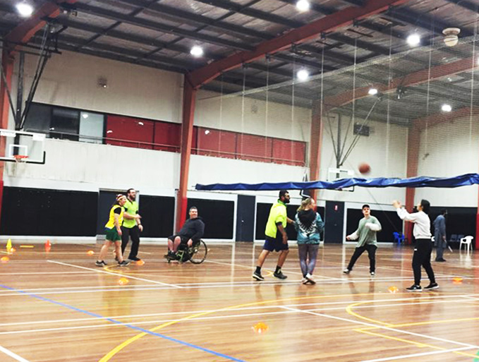
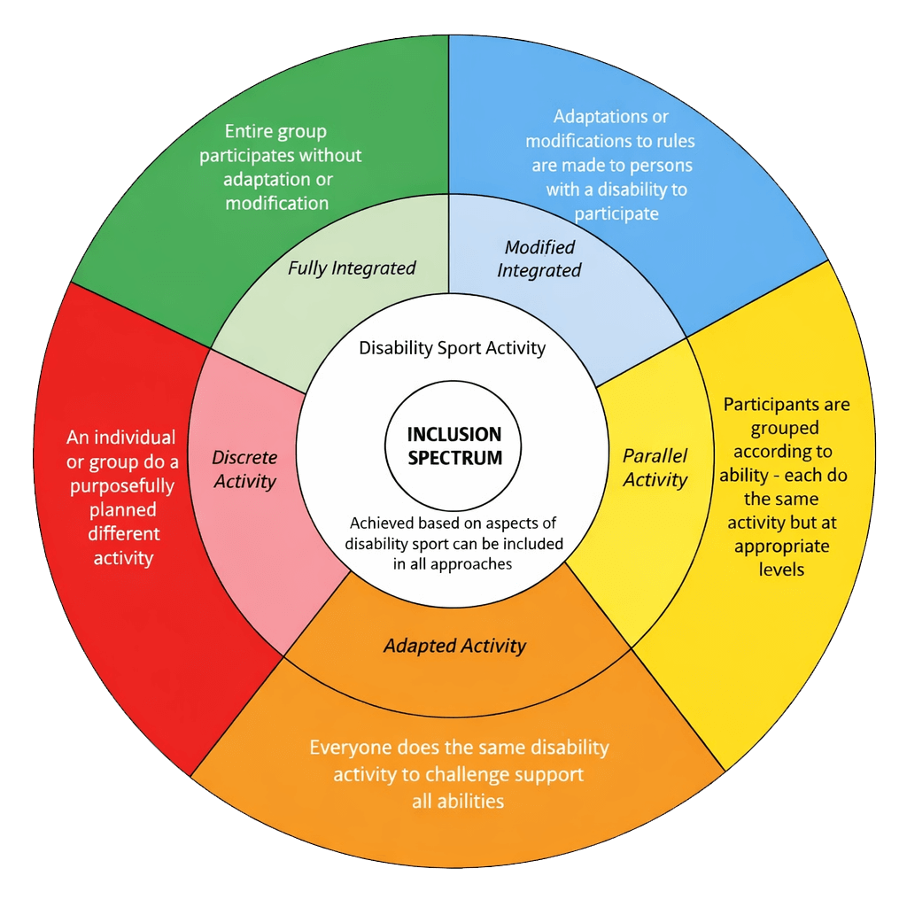

The Australian Sports Commission promotes an inclusion spectrum of how clubs can engage people with a disability in sports.
The elements of the spectrum are:
No modification
Minor modification
Major modification
Primarily for people with a disability
Only for people with a disability
Non-playing role

Here are some examples of each element in the spectrum:
No modifications:
A child with an intellectual disability participates in the local AFL Auskick program.
Minor modifications:
A lawn bowler who uses a wheelchair uses a bowling arm to bowl.
Major modifications:
A secured shot-putter competes under separate rules using modified equipment against other athletes with disability in an integrated track and field competition.
Primarily for people with disability:
Soccer players with vision impairment play blind football with people without a vision impairment who wear blindfolds.
Only for people with disability:
A team of adults with an intellectual disability play in the FIDA (Football Integration Development Association) league however are part of the wider club.
Non-playing role:
People with disability can be officials, coaches, club presidents, volunteers, and spectators.
Adapted from Australian Sports Commission fact sheet ‘Inclusion in Sport’:

Slam Down Under – Table Tennis for Adults with Intellectual Disability and Anxiety
“I was scared to leave the house. Now I’m part of a team.”
Slam Down Under is a community-based table tennis program in Victoria that supports adults with intellectual disability,
many of whom also experience anxiety or mental health challenges. It was created by a local disability advocate and former
table tennis coach who saw a gap for adults looking for a safe, social, and low-pressure sporting experience.
How did they do this:
Co-designed the program with participants and families, ensuring it felt calm, respectful, and non-competitive.
Ran sessions at the same time and place each week, creating predictability for those with anxiety or change sensitivity.
Allowed players to join in gradually — some started by just watching, then picking up a paddle when ready.
Created a quiet entry space for players to arrive and settle in, with no noise or pressure.
Used gentle coaching — focusing on movement, confidence, and fun rather than technical perfection.
Reframed success: “If you came and smiled, that’s a win.”
The Impact
Many players who hadn’t left home independently now attend weekly.
Several have made new friends for the first time in years.
One participant, who had not spoken in public before, led a warm-up game after a year of involvement.
Families report reduced anxiety, improved self-esteem, and a stronger sense of identity.
“It’s not really about table tennis, it’s about belonging somewhere without fear.” – Parent of a participant
Thank you for completing Module 1, let’s dive into Module 2.